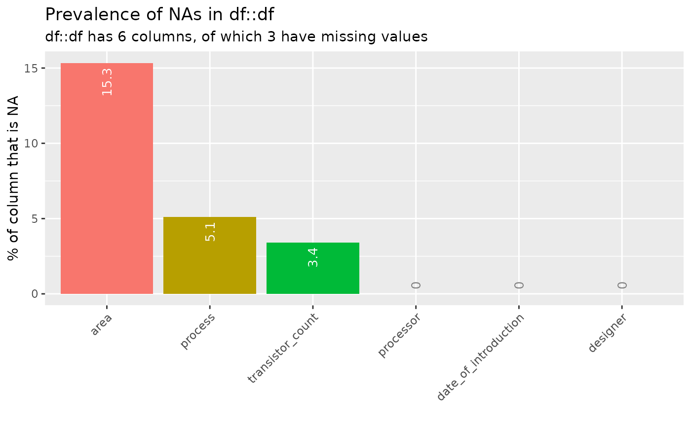
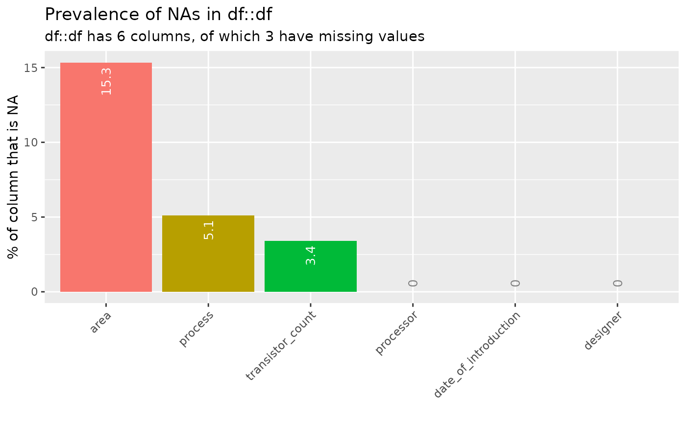
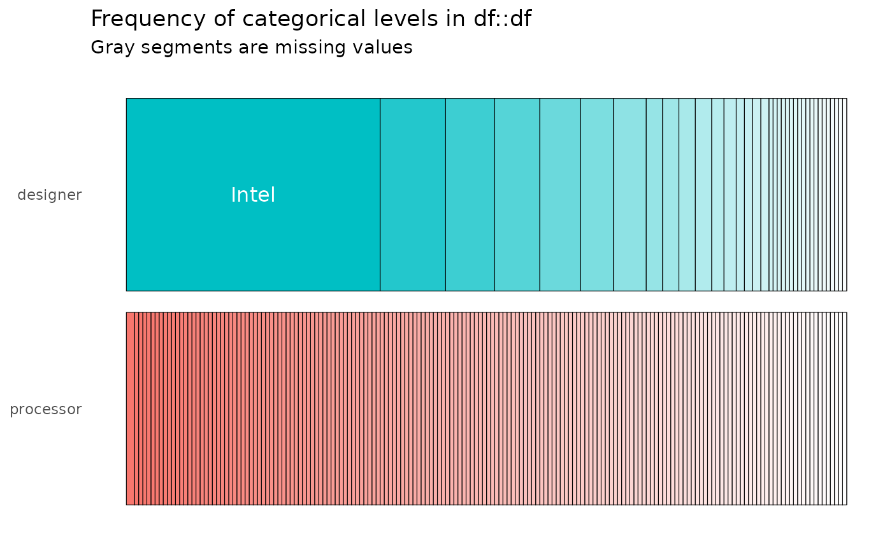
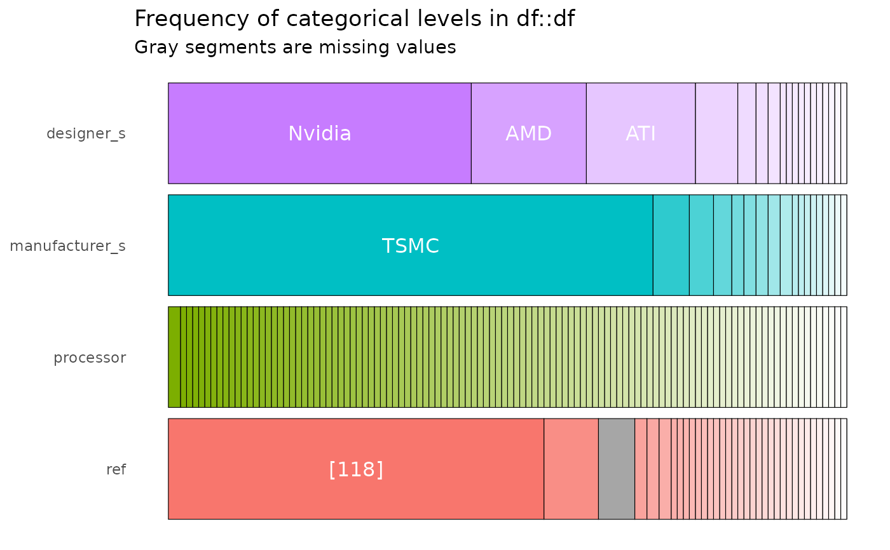
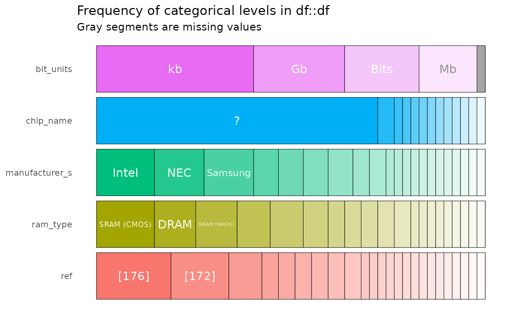
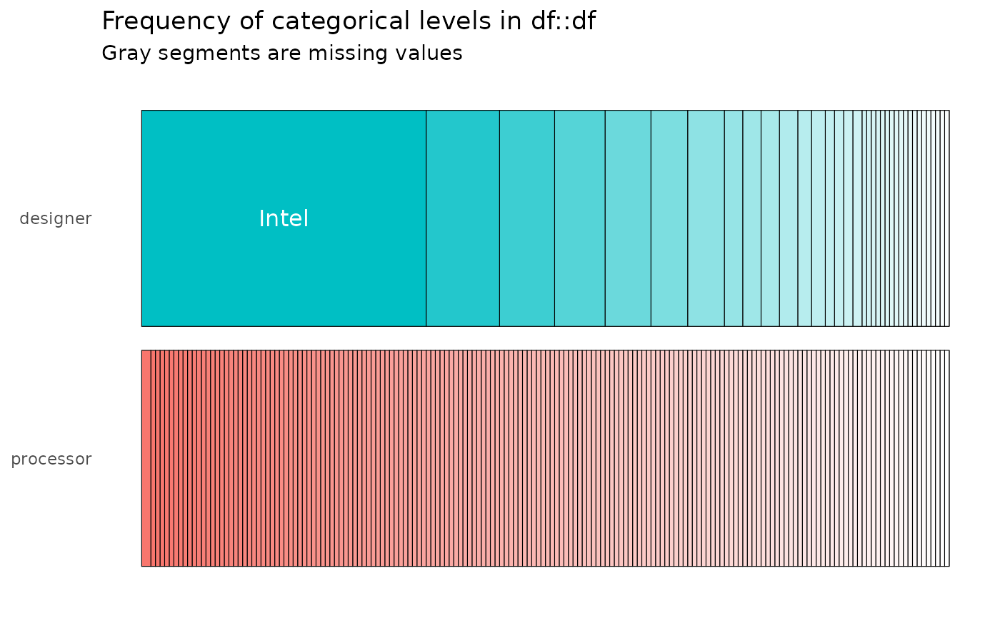
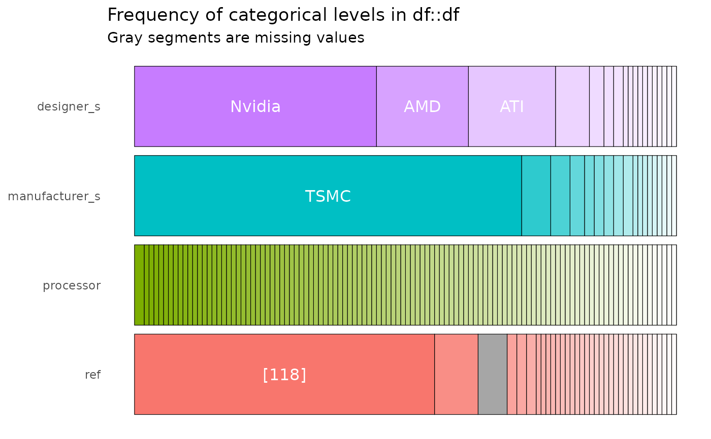
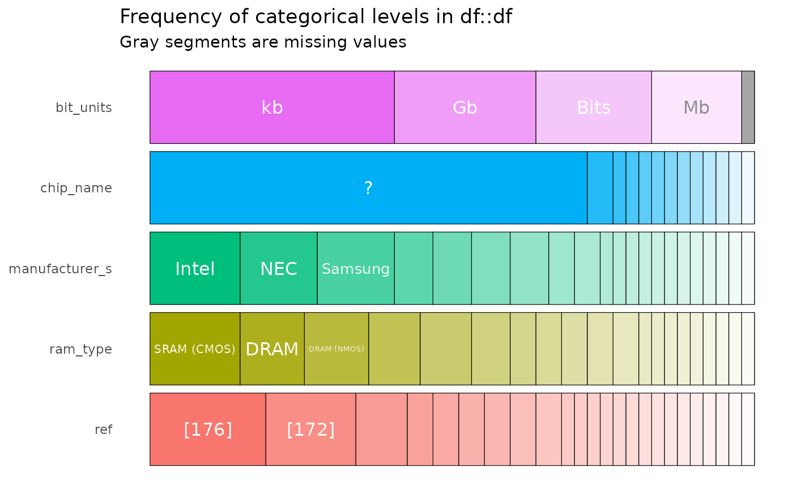

Inspect and Plot TidyTuesday Data
inspect_plot.RdA comprehensive function that analyzes TidyTuesday datasets and generates appropriate inspection plots based on data characteristics and number of datasets.
Arguments
- ttd
A list of data frames from
load_tt_data()- plot
Character vector specifying which plots to generate. Options include:
"types"- Column type distributions"mem"- Memory usage analysis"na"- Missing value analysis"cor"- Correlation analysis (numeric columns)"imb"- Feature imbalance (categorical columns)"num"- Numeric column summaries"cat"- Categorical column summaries"all"- Generate all available plots (default)
Examples
ttd <- load_tt_data("Moore’s Law")
#> INFO [2025-07-16 14:17:32] Starting import for cpu.csv from https://raw.githubusercontent.com/rfordatascience/tidytuesday/refs/heads/main/data/2019/2019-09-03/cpu.csv
#> SUCCESS [2025-07-16 14:17:32] Successfully loaded cpu.csv
#> INFO [2025-07-16 14:17:32] Starting import for gpu.csv from https://raw.githubusercontent.com/rfordatascience/tidytuesday/refs/heads/main/data/2019/2019-09-03/gpu.csv
#> SUCCESS [2025-07-16 14:17:32] Successfully loaded gpu.csv
#> INFO [2025-07-16 14:17:32] Starting import for ram.csv from https://raw.githubusercontent.com/rfordatascience/tidytuesday/refs/heads/main/data/2019/2019-09-03/ram.csv
#> SUCCESS [2025-07-16 14:17:32] Successfully loaded ram.csv
# Generate all plots
inspect_plot(ttd)
#> INFO [2025-07-16 14:17:32] inspect_plot(): starting analysis
#> INFO [2025-07-16 14:17:32] Beginning plot type 'types'
 #> SUCCESS [2025-07-16 14:17:33] Completed plot type 'types'
#> INFO [2025-07-16 14:17:33] Beginning plot type 'mem'
#> SUCCESS [2025-07-16 14:17:33] Completed plot type 'types'
#> INFO [2025-07-16 14:17:33] Beginning plot type 'mem'

 #> SUCCESS [2025-07-16 14:17:33] Completed plot type 'mem'
#> INFO [2025-07-16 14:17:33] Beginning plot type 'na'

#> SUCCESS [2025-07-16 14:17:34] Completed plot type 'na'
#> INFO [2025-07-16 14:17:34] Beginning plot type 'cor'
#> SUCCESS [2025-07-16 14:17:33] Completed plot type 'mem'
#> INFO [2025-07-16 14:17:33] Beginning plot type 'na'

#> SUCCESS [2025-07-16 14:17:34] Completed plot type 'na'
#> INFO [2025-07-16 14:17:34] Beginning plot type 'cor'

 #> SUCCESS [2025-07-16 14:17:34] Completed plot type 'cor'
#> INFO [2025-07-16 14:17:34] Beginning plot type 'imb'
#> SUCCESS [2025-07-16 14:17:35] Completed plot type 'imb'
#> INFO [2025-07-16 14:17:35] Beginning plot type 'num'
#> SUCCESS [2025-07-16 14:17:36] Completed plot type 'num'
#> INFO [2025-07-16 14:17:36] Beginning plot type 'cat'



#> SUCCESS [2025-07-16 14:17:36] Completed plot type 'cat'
#> SUCCESS [2025-07-16 14:17:36] inspect_plot(): all requested plots finished
#> NULL
# Generate only specific plots
inspect_plot(ttd, plot = c("types", "mem"))
#> INFO [2025-07-16 14:17:36] inspect_plot(): starting analysis
#> INFO [2025-07-16 14:17:36] Beginning plot type 'types'
#> SUCCESS [2025-07-16 14:17:34] Completed plot type 'cor'
#> INFO [2025-07-16 14:17:34] Beginning plot type 'imb'
#> SUCCESS [2025-07-16 14:17:35] Completed plot type 'imb'
#> INFO [2025-07-16 14:17:35] Beginning plot type 'num'
#> SUCCESS [2025-07-16 14:17:36] Completed plot type 'num'
#> INFO [2025-07-16 14:17:36] Beginning plot type 'cat'



#> SUCCESS [2025-07-16 14:17:36] Completed plot type 'cat'
#> SUCCESS [2025-07-16 14:17:36] inspect_plot(): all requested plots finished
#> NULL
# Generate only specific plots
inspect_plot(ttd, plot = c("types", "mem"))
#> INFO [2025-07-16 14:17:36] inspect_plot(): starting analysis
#> INFO [2025-07-16 14:17:36] Beginning plot type 'types'

 #> SUCCESS [2025-07-16 14:17:37] Completed plot type 'types'
#> INFO [2025-07-16 14:17:37] Beginning plot type 'mem'
#> SUCCESS [2025-07-16 14:17:37] Completed plot type 'types'
#> INFO [2025-07-16 14:17:37] Beginning plot type 'mem'
 #> SUCCESS [2025-07-16 14:17:37] Completed plot type 'mem'
#> SUCCESS [2025-07-16 14:17:37] inspect_plot(): all requested plots finished
#> NULL
# Generate single plot type
inspect_plot(ttd, plot = "cor")
#> INFO [2025-07-16 14:17:37] inspect_plot(): starting analysis
#> INFO [2025-07-16 14:17:37] Beginning plot type 'cor'
#> SUCCESS [2025-07-16 14:17:37] Completed plot type 'mem'
#> SUCCESS [2025-07-16 14:17:37] inspect_plot(): all requested plots finished
#> NULL
# Generate single plot type
inspect_plot(ttd, plot = "cor")
#> INFO [2025-07-16 14:17:37] inspect_plot(): starting analysis
#> INFO [2025-07-16 14:17:37] Beginning plot type 'cor'
 #> SUCCESS [2025-07-16 14:17:37] Completed plot type 'cor'
#> SUCCESS [2025-07-16 14:17:37] inspect_plot(): all requested plots finished
#> NULL
#> SUCCESS [2025-07-16 14:17:37] Completed plot type 'cor'
#> SUCCESS [2025-07-16 14:17:37] inspect_plot(): all requested plots finished
#> NULL